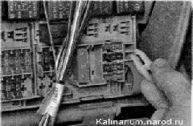
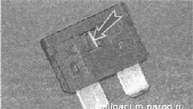

Монтажный блок - замена предохранителей и релеПредохранители и реле системы управления двигателем установлены в центральной консоли панели приборов. Монтажный блок предохранителей и реле: 1 — место установки реле включения стеклоочистителя фар, К1; 2 — реле включения дальнего света фар, К7; 3 — реле включения звукового сигнала К8; 4 — реле включения стеклоподъемников дверей, К2; 5 - место установки реле включения противотуманных фар, К9; 6 — реле стартера; 7 — реле включения обогрева заднего стекла, К10; 8 — дополнительное реле. К4; 9 — реле включения подогрева сидений, К11; 10 — реле включения указателей поворота и аварийной сигнализации, К5; 11 — место установки резервного реле, К12; 12 — реле включения стеклоочистителя и стеклоомывателя ветрового стекла, Кб; 13 —пинцет для извлечения предохранителей и реле с маленьким корпусом; 14 —пинцет для извлечения реле , F27; 15 — запасные предохранители; 16 — место установки предохранителя АБС, F28; 17 — предохранитель электроусилителя рулевого управления; - 18 — предохранители F1—F26 На корпусе монтажного блока указаны порядковые номера предохранителей и реле. Назначение реле и защищаемые предохранителями цепи обозначены условными символами па внутренней стороне крышки монтажного блока. Там же для предохранителей указана сила тока. Монтажные блоки разных производителей могут незначительно отличаться количеством и расположением предохранителей. предохранители и защищаемые цепи
Примечание. В скобках указаны отличия для монтажного блока, имеющего нумерацию на 31 предохранитель. При замене предохранителей следует руководствоваться условными обозначениями на крышке монтажного блока. * Устанавливается на часть автомобилей. Перед заменой предохранителя необходимо определить и устранить причину его перегорания. Во избежание выхода из строя элементов электрооборудования нельзя устанавливать предохранители с увеличенным номиналом или самодельные. Последовательность выполнения 1. Подготавливаем автомобиль к выполнению работы и отсоединяем клемму провода от отрицательного вывода аккумуляторной батареи. 2. Потянув за выступ на левой стороне панели приборов, открываем крышку монтажного блока. 3. По порядковому номеру на корпусе монтажного блока находим предохранитель неисправной цепи.- 4. В монтажном блоке предохранителей и реле находится пинцет для извлечения предохранителей.  5. Сжимаем пинцетом корпус предохранителя и вынимаем предохранитель из блока. Неисправный предохранитель можно определить по перегоревшей нити. 
Иногда нить предохранителя остается целой, в то время как ее соединение внутри предохранителя нарушено. Визуально определить такую неисправность невозможно. В этом случае оценить состояние предохранителя можно при помощи омметра или контрольной лампы. 6. Устанавливаем новый предохранитель соответствующего номинала. 7. При необходимости замены реле, извлекаем его съемником, находящимся в монтажном блоке. 8. Устанавливаем новое реле аналогичного типа. 9. Закрываем крышку монтажного блока и подсоединяем аккумуляторную батарею. |